سرگرمی:
کیا گیلے بال تیرتے ہیں یا چپکتے ہیں؟
خلاصہ:
تعارف:
کیا آپ نے کبھی دیکھا ہے کہ جب بال پانی کے نیچے ہوتے ہیں تو کس طرح آزادانہ طور پر حرکت کرتے ہیں، لیکن جیسے ہی یہ پانی سے باہر نکلتے ہیں ایک ساتھ چمٹ جاتے ہیں؟ نہ صرف انسانی بال ایسا کرتے ہیں۔ جب گیلے کتے تیراکی کے بعد خود کو ہلاتے ہیں تو ان کے بال ایک دوسرے کے ساتھ چپک جاتے ہیں۔ یہ دیکھنے کے لیے اس سرگرمی کو آزمائیں کہ گیلے بال خشک بالوں کے مقابلے میں بہت کم فلفی کیوں ہیں!
مواد:
- پینٹ برش، گول برش بہترین کام کرتے ہیں۔ اگر دستیاب ہو تو، مختلف موٹائیوں، برسلز کی اقسام وغیرہ کے ساتھ برش منتخب کریں۔
- پانی سے بھرا ہوا پیالہ یا سنک
- تولیہ
- وہ علاقہ جو گیلا ہو سکتا ہے۔
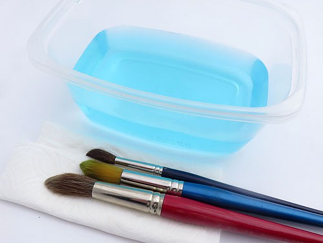
طریقہ کار
- خشک پینٹ برش سے شروع کریں۔ اس کے برسلز کے بنڈل کا مشاہدہ کریں۔
یہ کیا شکل ہے؟ کیا یہ fluffy یا ہوشیار ہے؟ کیا آپ آسانی سے سنگل برسلز کی تمیز کر سکتے ہیں؟ bristles کو ایک ساتھ تھامے ہوئے کیا ہے؟ ایک طرف کھینچنا کتنا آسان ہے؟
- ایک لمحے میں، آپ برش کو پانی میں ڈبو دیں گے۔
کیا آپ توقع کرتے ہیں کہ برسلز کا بنڈل مختلف نظر آئے گا؟ اگر ایسا ہے تو آپ کے خیال میں ایسا کیسے اور کیوں ہوتا ہے؟
- اپنے برش کو ڈوبیں اور جب پانی سے گھرا ہو تو بنڈل کا مشاہدہ کریں۔
کیا شکل بدل گئی؟ کیا یہ fluffier یا slicker لگ رہا ہے؟ کیا آپ سنگل برسلز کو اتنی آسانی سے الگ کر سکتے ہیں؟ آپ کو کیا لگتا ہے کہ اگر آپ اسے اپنی طرف کھینچنے کی کوشش کرتے ہیں تو انفرادی برسل کیا جواب دے گا؟ کیوں؟
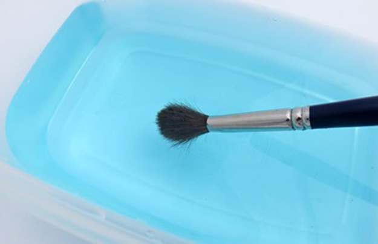
- اپنے ہاتھ پانی میں ڈالیں اور محسوس کریں کہ آپ کتنی آسانی سے ایک برسل کو اپنی طرف کھینچ سکتے ہیں۔
کیا یہ پیشین گوئی کے مطابق تھا؟ اگر آپ کے پاس کوئی وضاحت ہے تو کیا آپ اسے تبدیل کرنا چاہیں گے؟ آپ کے خیال میں جب آپ اسے پانی سے باہر نکالیں گے تو برسلز کا بنڈل کیسا نظر آئے گا؟
- پانی سے اپنا برش ہٹائیں اور مشاہدہ کریں۔
برسلز کا بنڈل کیا شکل ہے؟ کیا یہ fluffy یا ہوشیار ہے؟ کیا آپ آسانی سے سنگل برسلز کی تمیز کر سکتے ہیں؟ آپ کو ایسا کیوں لگتا ہے جب گیلے لیکن ڈوبے ہوئے نہیں ہیں؟ ایک برسل کو ایک طرف کھینچنا کتنا آسان ہے؟
- آپ نے صرف ایک پینٹ برش کے ساتھ تجربہ کیا۔ شاید ایک مختلف پینٹ برش مختلف ہو گا! دوسرے پینٹ برش کے ساتھ تجربہ دہرائیں۔
کیا ایسا ہی ہوتا ہے؟
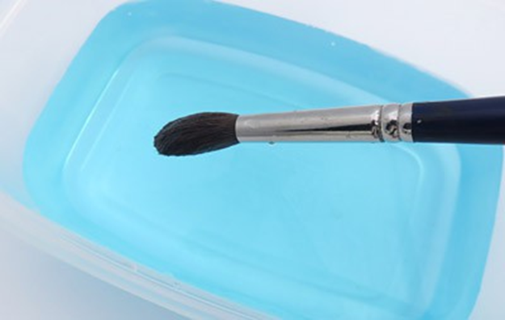
- آپ نے صرف ایک پینٹ برش کے ساتھ تجربہ کیا۔ شاید ایک مختلف پینٹ برش مختلف ہو گا! دوسرے پینٹ برش کے ساتھ تجربہ دہرائیں۔
کیا ایسا ہی ہوتا ہے؟
سرگرمی:
ہمارے نظام شمسی میں سیارے کتنے بڑے ہیں؟
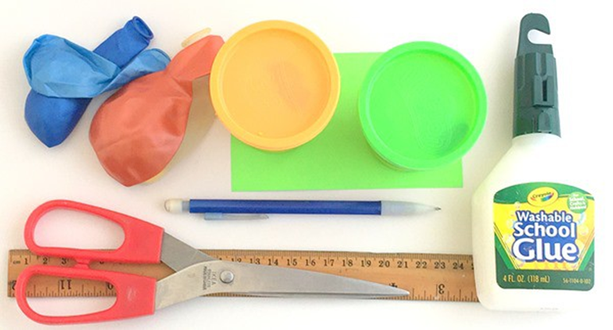
خلاصہ:
تعارف:
کیا آپ جانتے ہیں کہ ہماری کہکشاں میں ستاروں سے زیادہ سیارے ہیں؟ یہ تمام سیارے ایک ستارے کے گرد چکر لگاتے ہیں، لیکن ان میں سے صرف آٹھ — عطارد، زہرہ، زمین، مریخ، مشتری، زحل، یورینس اور نیپچون — سورج کے گرد چکر لگاتے ہیں — ہمارے نظام شمسی کا ستارہ۔ یہ سرگرمی ان آٹھ سیاروں کے رشتہ دار سائز کی کھوج کرتی ہے۔ کیا ایک دوسرے سے بہت بڑا ہوگا، یا وہ سب ایک ہی سائز کے ہیں؟
مواد:
- آٹا کھیلیں - اسٹور سے خریدا یا گھر کا۔
- غبارے (4)
- میٹرک حکمران
- کارڈ اسٹاک
- قینچی
- مارکر یا پنسل
- گلو یا ٹیپ
- اختیاری: سوت کا ٹکڑا
تیاری کا کام:
کارڈ اسٹاک سے لیبل کاٹ دیں، 2 سینٹی میٹر x 6 سینٹی میٹر اچھی طرح کام کرتا ہے۔
طریقہ کار:
- آپ نظام شمسی کے آٹھ سیاروں میں سے ہر ایک کا ماڈل بنائیں گے۔ آپ زمین سے شروع کریں گے۔ تصور کریں کہ آپ زمین کو ایک چھوٹے سے کرہ تک سکڑتے ہیں۔ پھر، تمام سات دیگر سیاروں کو اسی مقدار سے سکڑیں۔ نتیجہ وہ ماڈل ہوگا جسے آپ بنانے جا رہے ہیں!
- زمین کی نمائندگی کرنے کے لیے، 2 سینٹی میٹر قطر کے ساتھ پلے آٹے کا ایک گولہ بنائیں۔ ایک کرہ کا قطر سطح پر ایک نقطہ سے کرہ کے مرکز کے فاصلے سے دوگنا ہے۔ اگر آپ کو لگتا ہے کہ یہ آسان ہے، تو آپ اس بات کو یقینی بنانے کے لیے کرہ کے فریم کی پیمائش بھی کر سکتے ہیں کہ آپ کے کرہ کا سائز صحیح ہے۔ سوت کا ایک ٹکڑا اس کے چوڑے مقام پر دائرے کے گرد لپیٹ دیں۔ تار کی لمبائی کرہ کا طواف ہے۔ جب آپ کے دائرے کا قطر 2 سینٹی میٹر ہو تو سوت کا ٹکڑا (یا فریم) 6.3 سینٹی میٹر ہو گا۔
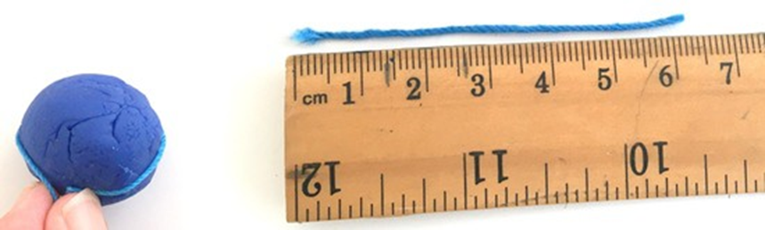
- ایک لیبل لیں، اس پر "زمین" لکھیں۔ زمین کے اپنے ماڈل میں لیبل کے ایک کونے کو چسپاں کریں۔
کیا آپ کو لگتا ہے کہ نظام شمسی میں زیادہ تر سیارے بڑے، چھوٹے یا تقریباً سیارہ زمین کے برابر ہیں؟
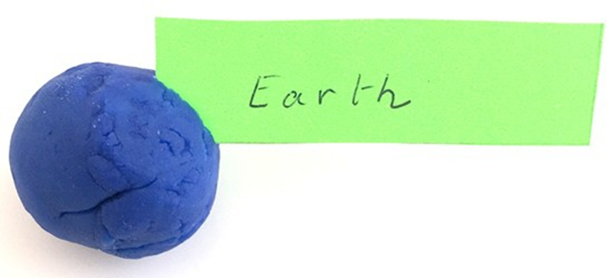
- نیچے دی گئی جدول میں آٹھ سیاروں کی فہرست دی گئی ہے جن کے قطر کی نسبت زمین کے قطر کے مقابلے میں ہے۔
*یہ تناسب قریب ترین نصف تک گول ہیں۔ مزید درست ڈیٹا کے لیے سولر سیارہ ڈیٹا شیٹ سے مشورہ کریں۔
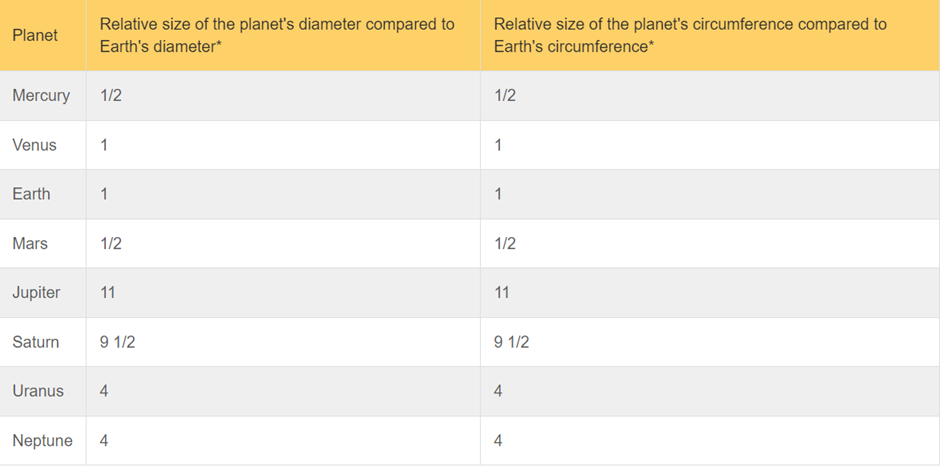
میز کو دیکھ کر، کیا آپ جان سکتے ہیں کہ عطارد کا قطر زمین کے مقابلے میں کتنا بڑا ہے؟ آپ کے ماڈل میں، زمین کا قطر 2 سینٹی میٹر ہے، آپ کے ماڈل میں عطارد کا قطر کیا ہونا چاہیے؟
- جدول کے مطابق، عطارد کا قطر زمین کے قطر سے نصف ہے (تناسب 1/2 ہے)۔ حقیقت میں، عطارد کا قطر زمین کے نصف قطر سے تھوڑا چھوٹا ہے۔ فریم اسی تناسب کی پیروی کرتا ہے، لہذا اس کا طواف بھی نصف سے تھوڑا چھوٹا ہوگا۔ مرکری کے لیے ایک پلے آٹا گولہ بنائیں جس کا قطر 1 سینٹی میٹر سے کم ہو، یا 3.1 سینٹی میٹر سے تھوڑا سا فریم ہو۔
- ایک لیبل لیں، اس پر "مرکری" لکھیں۔ مرکری کے اپنے ماڈل میں اس کا ایک کونا چپکا دیں۔
- ٹیبل میں زہرہ تلاش کریں۔
کیا آپ جان سکتے ہیں کہ آپ کے ماڈل میں زہرہ کا کتنا بڑا ہونا ضروری ہے؟
- زہرہ کا سائز زمین جیسا ہے۔ زمین کے سائز کے برابر ایک کرہ بنائیں، اور اسے وینس کا لیبل لگائیں۔
- اگلا مریخ ہے۔
میز کو دیکھ کر، کیا آپ جان سکتے ہیں کہ آپ کے ماڈل میں مریخ کو کتنا بڑا ہونا ضروری ہے؟ کیا کوئی اور سیارہ ہے جو آپ نے پہلے ہی بنا رکھا ہے جس کا سائز مریخ جیسا ہے؟
- جدول کے مطابق، مریخ کا قطر زمین کے قطر سے نصف ہے (تناسب 1/2 ہے)۔ حقیقت میں، مریخ کا قطر زمین کے نصف قطر سے تھوڑا زیادہ ہے۔ مریخ کے لیے ایک پلے آٹے کا گولہ بنائیں جس کا قطر 1 سینٹی میٹر سے کچھ زیادہ ہو۔ اس پر "مریخ" کا لیبل لگائیں۔
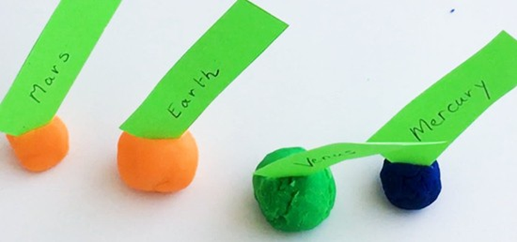
- جدول میں مشتری کو تلاش کریں۔
کیا آپ جان سکتے ہیں کہ آپ کے ماڈل میں مشتری کا کتنا بڑا ہونا ضروری ہے؟
- مشتری کا ایک قطر ہے جو زمین کے قطر سے 11 گنا زیادہ ہے، لہذا آپ کے ماڈل میں، اس کا قطر 22 سینٹی میٹر (دائرہ 68 سینٹی میٹر) ہونا ضروری ہے۔ آپ کے پاس شاید اتنا بڑا آٹا نہیں ہے کہ آپ اتنا بڑا گولہ بنا سکیں۔ اس کے بجائے، ایک بڑے غبارے کو اڑائیں جب تک کہ اس کا قطر تقریباً 22 سینٹی میٹر نہ ہو اور اسے باندھ دیں۔ مشتری کے لیے ایک لیبل بنائیں اور اسے اپنے غبارے پر چپکائیں۔
کیا مشتری کے بارے میں کچھ نمایاں ہے؟
- اگلا زحل ہے۔
میز کو دیکھ کر، کیا آپ یہ جان سکتے ہیں کہ آپ کے ماڈل میں زحل کا کتنا بڑا ہونا ضروری ہے؟ کیا آپ زحل کا نمونہ بنانے کے لیے غبارہ استعمال کریں گے یا آٹا کھیلیں گے؟
- ایک بڑے غبارے کو اس وقت تک اڑائیں جب تک کہ اس کا قطر تقریباً 19 سینٹی میٹر نہ ہو اور اسے باندھ دیں۔ اسے "زحل" کا لیبل لگائیں۔
- اگلا سیارہ یورینس ہے۔
کیا آپ یہ جان سکتے ہیں کہ آپ کے ماڈل میں یورینس کا کتنا بڑا ہونا ضروری ہے؟ کیا آپ یورینس کا نمونہ بنانے کے لیے غبارہ استعمال کریں گے یا آٹا کھیلیں گے؟
- ماڈل یورینس جس میں ایک غبارہ 8 سینٹی میٹر قطر تک اڑا ہوا ہے (دائرہ 25.1 سینٹی میٹر)۔ آپ چھوٹے سائز کے غبارے کا استعمال کر سکتے ہیں یا بڑے غبارے کو تھوڑا سا اڑا سکتے ہیں۔ اس غبارے پر "یورینس" کا لیبل لگائیں۔
- اب بھی ایک اور سیارہ۔
ہم کون سا سیارہ یاد کر رہے ہیں؟ کیا آپ اس کا سائز تلاش کر سکتے ہیں؟
- نیپچون سائز میں یورینس سے ملتا جلتا ہے، لہذا آپ نے یورینس کی طرح نیپچون کا ماڈل بنایا۔ اس غبارے پر "نیپچون" کا لیبل لگائیں۔
- اپنے ماڈل سیاروں کو اس ترتیب میں رکھیں جس ترتیب سے وہ جدول میں درج ہیں (پہلے عطارد، پھر زہرہ، ...)۔ یہ وہ ترتیب ہے جس میں وہ خلا میں نظر آتے ہیں، عطارد سورج کے سب سے قریب ہے، اور نیپچون سب سے دور ہے۔
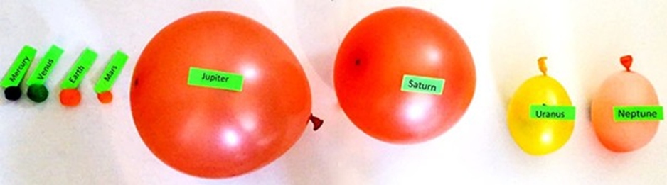
- یہ ہمارے نظام شمسی کے سیارے ہیں، لیکن ہم نے سورج کا ماڈل نہیں بنایا۔
کیا آپ جانتے ہیں کہ اگر آپ اپنے ماڈل میں سورج کو شامل کرنا چاہتے ہیں تو آپ کو سورج کو کتنا بڑا بنانا ہوگا؟
- سورج بہت بڑا ہے، زمین سے تقریباً 109 گنا بڑا ہے۔ اگر آپ کو کوئی ایسا دائرہ ملتا ہے جس کا قطر تقریباً 2 میٹر ہو تو اسے اپنے نظام شمسی کے ماڈل میں شامل کریں۔
سرگرمی:
نائٹ لائٹ بنائیں
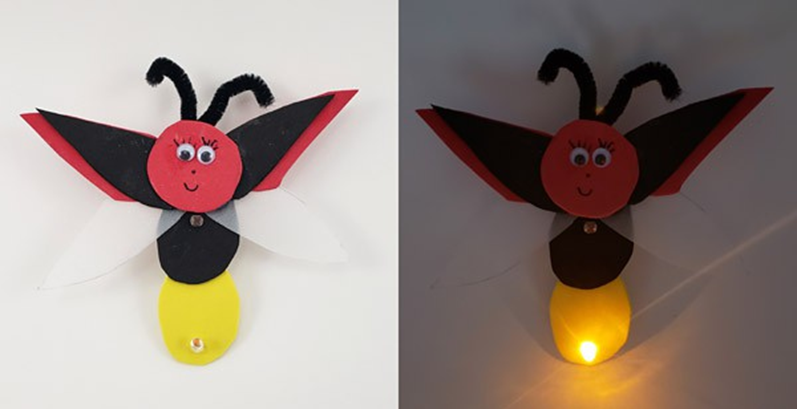
خلاصہ:
- فعال وقت
30-45 منٹ
- کل پروجیکٹ کا وقت
30-45 منٹ
- بنیادی خیال
سرکٹس، روشنی
تعارف:
کیا آپ کاغذی سرکٹس اور اسکویشی سرکٹس سے آگے بڑھنے کے لیے تیار ہیں؟ یہ ایک بہترین انٹرمیڈیٹ سرکٹ پروجیکٹ ہے جہاں آپ اپنی ورکنگ نائٹ لائٹ خود بنائیں گے۔ اور یقینا، آپ کو اسے سجانے میں کچھ مزہ آئے گا!
مواد:
- DIY نائٹ لائٹ کٹ، ہمارے پارٹنر ہوم سائنس ٹولز سے دستیاب ہے۔ اس کٹ میں وہ تمام الیکٹرانکس شامل ہیں جو آپ کو ایک سادہ سرکٹ بنانے کے لیے درکار ہیں جو اندھیرے میں خود بخود ایک LED آن کر دے گا:
- منی بریڈ بورڈ
- اے ٹرانزسٹر
- فوٹو ریسسٹر
- پوٹینشیومیٹر
- 3/4 انچ جمپر تار
- 30 Ω ریزسٹر
- 2xAAA بیٹری ہولڈر
- اے اے اے بیٹریاں (4)
- مختلف رنگوں میں سپر روشن ایل ای ڈی (3)
- آپ کی رات کی روشنی کو سجانے کے لیے دستکاری کا سامان (تعمیراتی کاغذ، قینچی، مارکر، گلو وغیرہ)۔
طریقہ کار:
- بریڈ بورڈ پر اپنا سرکٹ بنائیں جیسا کہ تصویر میں دکھایا گیا ہے۔
- اس بات پر دھیان دیں کہ حصوں کا سامنا کس طرح ہوتا ہے۔ کچھ حصے پیچھے کی طرف نہیں ہو سکتے، یا سرکٹ کام نہیں کرے گا۔
- بیٹری پیک کی سرخ اور کالی تاروں کو تبدیل نہ کریں۔
- تصویر میں، ایل ای ڈی کی لمبی ٹانگ بائیں طرف ہے، اور چھوٹی ٹانگ دائیں طرف ہے۔
- تصویر میں ٹرانزسٹر کے سامنے کی تحریر آپ کی طرف ہے۔
- اگر آپ کا سرکٹ گرم محسوس ہوتا ہے، یا آپ کوئی دھواں دیکھتے یا سونگھتے ہیں، تو آپ کے پاس شارٹ سرکٹ ہے۔ بیٹریاں فوری طور پر منقطع کریں اور اپنی وائرنگ کو دو بار چیک کریں۔

- پوٹینشیومیٹر کی نوب کو پوری طرح گھڑی کی سمت گھمائیں۔ ایل ای ڈی بند ہونا چاہئے.
- پوٹینشیومیٹر کی نوب کو پوری طرح گھڑی کی مخالف سمت میں گھمائیں۔ ایل ای ڈی کو آن کرنا چاہئے۔
- اگر LED آن نہیں ہوتی ہے (یا اگر آپ پوٹینشیومیٹر کو گھمانے پر LED کبھی بند نہیں ہوتی ہے) تو اپنے سرکٹ کو دو بار چیک کریں۔ اگر آپ اب بھی کوئی خرابی تلاش نہیں کر پاتے ہیں، تو کسی اور سے اسے آپ کے لیے دیکھنے کے لیے کہیں۔ بریڈ بورڈ کے غلط سوراخ پر صرف ایک حصہ ہونا سرکٹ کو کام کرنے سے روک دے گا۔ اگر آپ بریڈ بورڈز کے ساتھ کام کرنے کے لیے نئے ہیں تو غلطیوں کی نشاندہی کرنا مشکل ہو سکتا ہے۔
- پوٹینشیومیٹر کی نوب کو تقریباً درمیانی پوزیشن کی طرف موڑ دیں۔
- آپ اپنی انگلی سے فوٹو ریزسٹر کی نوک کو ڈھانپ کر اپنے سرکٹ کو تیزی سے جانچ سکتے ہیں۔ آپ لائٹس کو بھی بند کر سکتے ہیں، یا اپنے سرکٹ کو کسی تاریک کمرے میں لے جا سکتے ہیں۔ جب آپ ایسا کرتے ہیں تو، ایل ای ڈی کو آن کرنا چاہئے.
- پوٹینشیومیٹر کو موڑنا روشنی کی حد کو ایڈجسٹ کرتا ہے جس پر LED آن ہو گی۔ اپنے سرکٹ کو ایڈجسٹ کرتے رہیں اور جانچتے رہیں جب تک کہ آپ اسے اپنی پسند کے مطابق حاصل نہ کریں۔
- اپنے سرکٹ کو سجائیں! کیا آپ بریڈ بورڈ اور بیٹری کو چھپانے کے لیے کیس یا انکلوژر بنا سکتے ہیں؟ آپ کو یہ یقینی بنانا ہوگا کہ ایل ای ڈی اور فوٹو ریزسٹر اب بھی بے نقاب ہیں۔
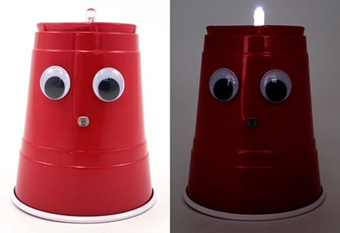
سرگرمی:
ایک ریت کا قلعہ بنائیں جو اینٹ کو سہارا دے سکے۔
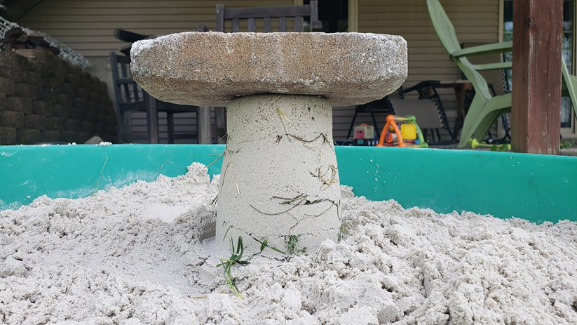
خلاصہ:
- فعال وقت
10-20 منٹ
- کل پروجیکٹ کا وقت
10-20 منٹ
- بنیادی خیال
وزن، قوتیں۔
تعارف:
کیا آپ ایک ریت کا قلعہ بنا سکتے ہیں جو اینٹ کو سہارا دے سکے؟ اس تفریحی STEM سرگرمی میں اسے آزمائیں!
مواد:
- ساحل سمندر پر یا سینڈ باکس میں گیلی ریت تک رسائی
- بالٹی
- گھاس یا سمندری سوار
- اینٹ یا دوسری بھاری چیز
طریقہ کار:
- ایک بنیادی ریت کا قلعہ بنائیں۔ گیلی ریت کو مضبوطی سے بالٹی میں پیک کریں، بالٹی کو الٹا پلٹائیں، پھر بالٹی کو ہلکے سے تھپتھپائیں یا ہلائیں اور ریت کو چھوڑنے کے لیے اسے اٹھا دیں۔
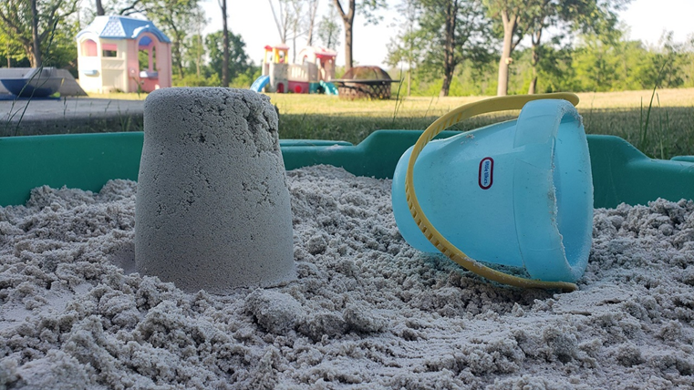
- ریت کے قلعے کے اوپر ایک اینٹ کو آہستہ سے رکھنے کی کوشش کریں۔
کیا ہوتا ہے؟
- اپنی بالٹی کے نیچے ریت کی 1-2 انچ کی تہہ کو مضبوطی سے باندھ دیں۔
- ریت کی تہہ کے اوپر گھاس یا سمندری سوار کے ٹکڑوں کے ساتھ ایک گرڈ بنائیں۔
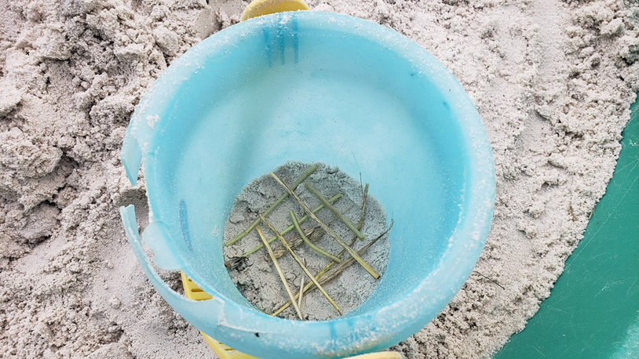
- اپنی گھاس یا سمندری سوار کے اوپر ریت کی ایک اور تہہ کو مضبوطی سے باندھ دیں۔ اس عمل کو دہرائیں، ریت اور گھاس/سمندری سوار کی تہوں کو بدلتے ہوئے، جب تک بالٹی بھر نہ جائے۔
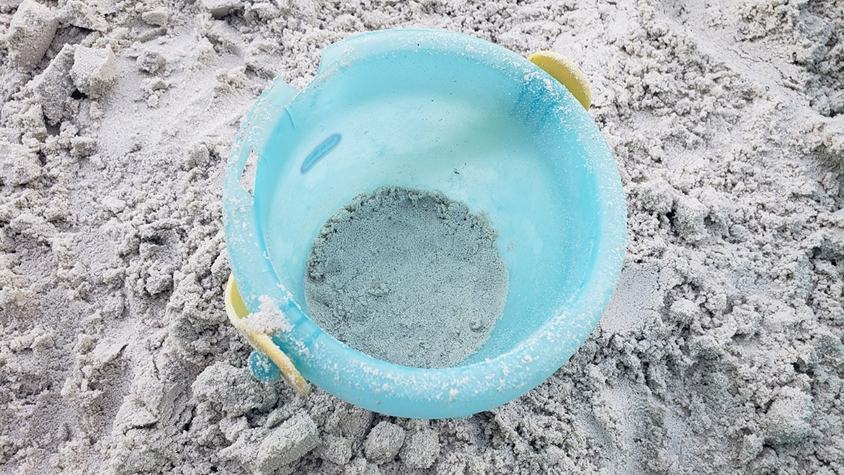
- بالٹی کو دوبارہ الٹا پلٹائیں اور ریت کو چھوڑنے کے لیے اسے آہستہ سے اٹھا دیں۔
آپ کے خیال میں اس بار جب آپ ریت کے قلعے پر اینٹ لگائیں گے تو کیا ہوگا؟
- نرمی سے اینٹوں کو اپنے ریت کے قلعے کے اوپر رکھیں۔
کیا ہوتا ہے؟